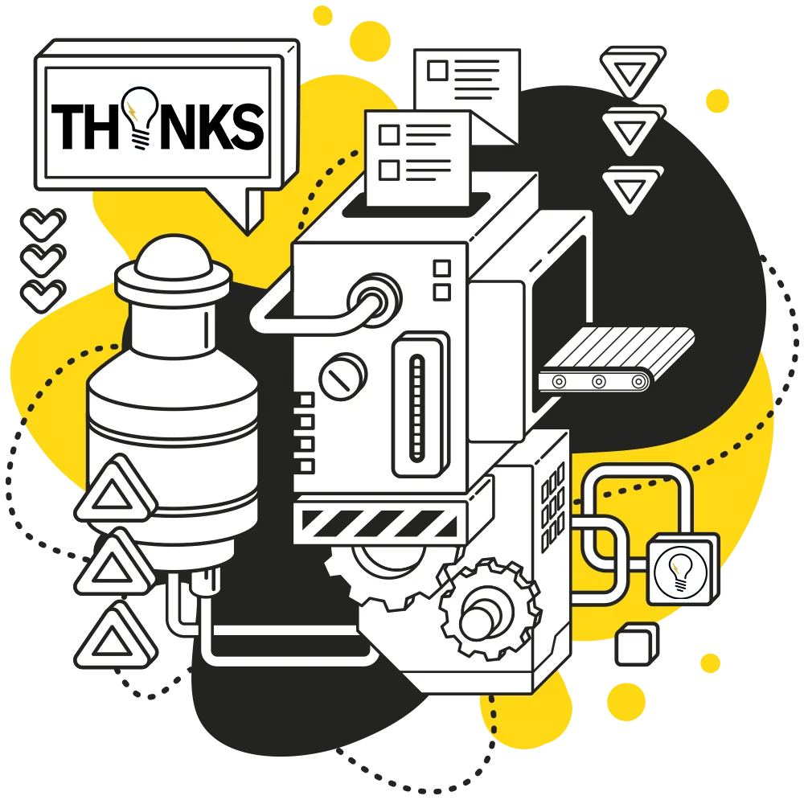
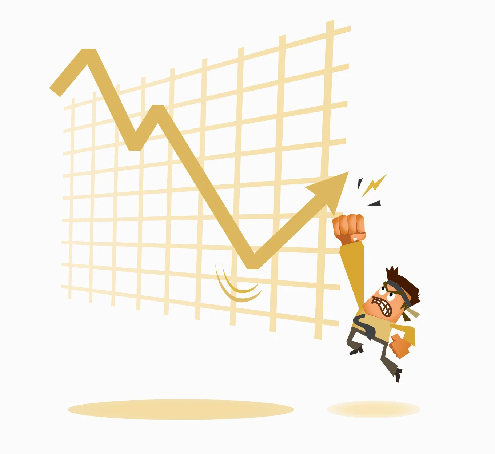
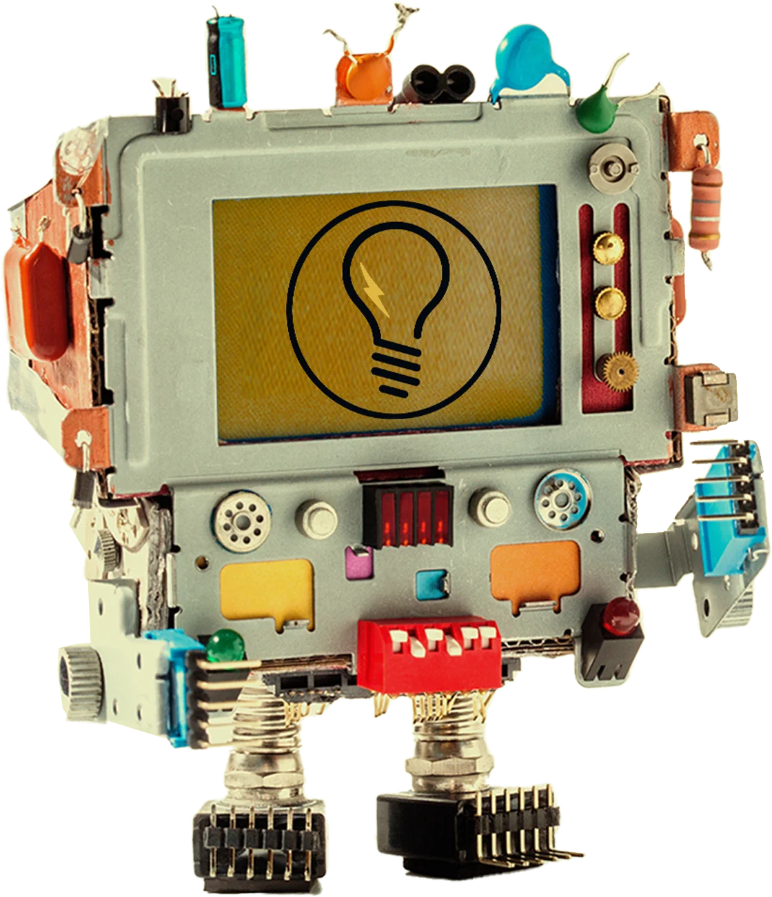

Remove repetitive tasks
Across intake, sales, operations, reporting, support, and fulfillment.
AI is only useful when it changes the business. Thynks identifies the repetitive decisions, slow handoffs, manual follow-ups, and messy knowledge flows that drain your team — then designs automation that works inside the tools you already use.
Copying data between systems. Summarizing calls. Routing leads. Writing the same replies. Chasing missing info. Updating spreadsheets. Pulling reports. Rebuilding context every Monday.
That's not productivity. That's wattage loss.
Across intake, sales, operations, reporting, support, and fulfillment.
Agents that retrieve information, qualify leads, summarize context, create drafts, and route requests.
Speed-to-lead workflows, lead scoring, lifecycle triggers, sales notes, reminders, and handoff systems.
Internal knowledge bases, searchable SOPs, customer service assistants, and training copilots.
Dashboards, weekly summaries, anomaly alerts, and executive briefs.
Where AI is worth using, where it's risky, where humans should stay in control.
Thynks designs AI systems with human review points, data boundaries, source grounding, workflow visibility, and escalation paths. The goal isn't to replace thinking. The goal is to protect it from repetitive drag.
We document where time, handoffs, and errors are hiding.
We rank automations by value, feasibility, risk, and speed to impact.
We launch the smallest useful system, connected to real workflows.
We train the team, monitor the output, and improve the system as the business learns.
Drag the rail. Every panel is a system we've wired into a real operation — the same circuitry we'll build into yours.

Intake, routing, and follow-up that runs without a human babysitting it.
Lead scoring, lifecycle triggers, and handoffs that keep deals warm.
Retrieve, qualify, summarize, and draft — with humans in control.
Searchable SOPs and assistants that answer from your truth, not guesses.

Dashboards, weekly briefs, and anomaly alerts that build themselves.

Where AI is worth using, where it's risky, where people stay in charge.
No. Good automation removes repetitive drag so your team can do higher-value work: judgment, relationships, creativity, and decisions.
Usually, yes. We commonly design around CRMs, spreadsheets, email, forms, calendars, ad platforms, CMS platforms, and internal tools.
We start with a workflow audit and score opportunities by value, frequency, complexity, and risk.
Both. Sometimes the best answer is a simple workflow. Sometimes it's a custom agent. We choose based on the business case, not the novelty.
Bring us the tasks that drain your team. We'll map the highest-leverage automations and build the first useful circuit.